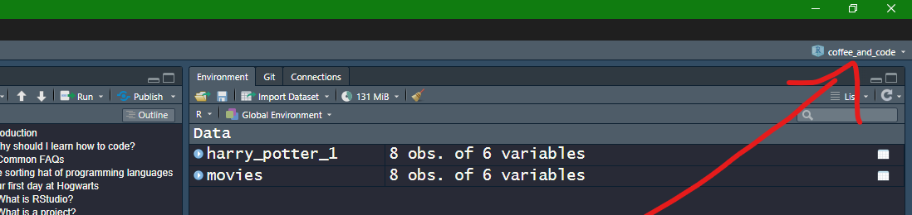
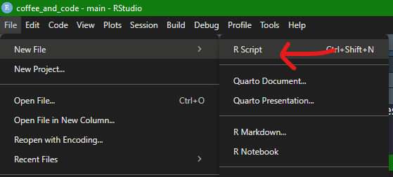
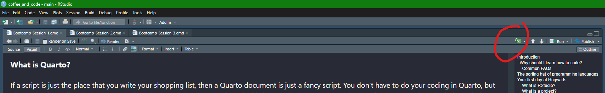
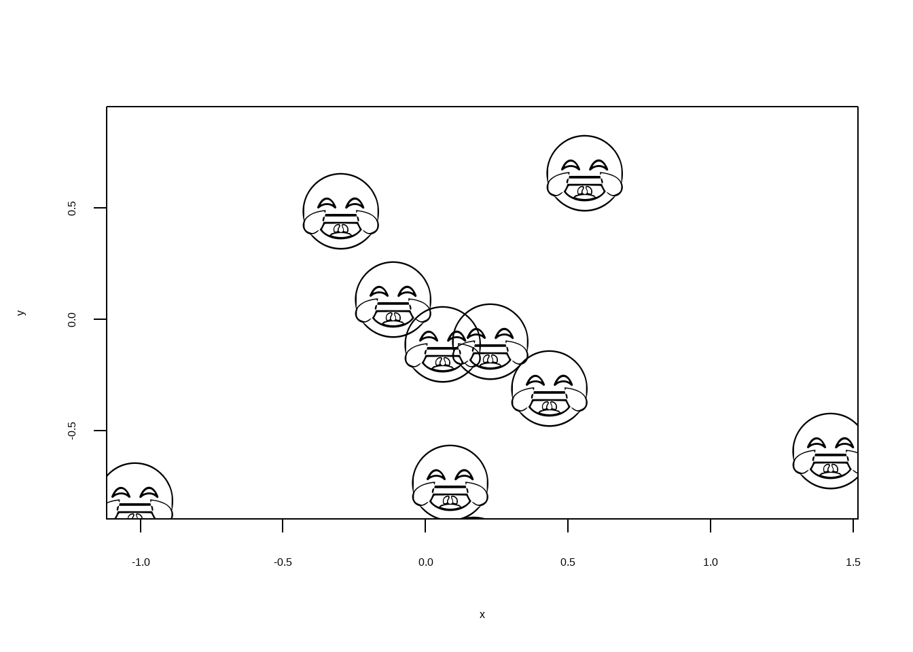

print("Hello world!")[1] "Hello world!"Hello everyone, you are probably interested in this bootcamp because you are pretty nifty with a spreadsheet already, but are getting fed up of seeing R users driving around Wakefield and beyond in their Lamborghini’s and Ferrari’s and you have thought - enough is enough, I want a piece of the pie. I want the glamorous life of an R programmer. Well look no further, in these three sessions we, the City and Guilds R development community, will equip you with everything you need to begin your new, more prosperous life.
Consuming information is easier if
actively, which is why you will coding along - this is a non-negotiable.Many people find coding enjoyable, others not so much. But this isn’t why data analysts, software developers, data scientists and the like do it. The real reason is because it both extends our capabilities and saves time simulaneously, in essence the juice is worth the squeeze. At some point the spreadsheets become too big, the tasks become too repetitive, the maintenance of products become too laborious. Remember when Harry, Hermoine, and Ron had to leave the comfort of the castle to go and hunt down the horcruxes? It’s kind of like that, except admittedly not as dramatic.
Q: Do I need to be good at maths to code?
A: Nope, very little/no mathematics involved in most day-to-day tasks.
Q: What is a programming language?
A: When we are coding we are essentially having a conversation with our machine and asking it to do things for us. These conversations are difficult because computers will only communicate is very specific ways, they are extremely fussy. A programming language is a set of established rules and conventions through which we can communicate with our machines.
Q: Is there more than one programming language?
A: Yes, there are many. Languages are typically created or adapted for specific purposes. For example, R, the one you are most likely to have heard of, is known as a statistical programming language. This just means it was made by stats geeks working in universities and has been refined by this community for many years to the point now where it is arguably the best language to carry out data analytics/ statistics/ data visualisation. If you were building a website however, you might use Javascript, or if you were developing a game you might use something like C++,. if you were storing large amounts of information in a database you’d probably use SQL, and so on and so forth. Python, another language you might have of, is a bit unusual, in that its more of a general purpose language. Someone (I can’t remember who) once said that Python is the second best language for everything, meaning that it’s also an excellent choice if you were only to learn one language, as you can apply it to most tasks.
Q: "I must not be good at this, it keeps breaking"
A: Errors are a day-to-day part of the process! Computers are very unreasonable things to communicate with and they will tell you about every tiny little thing you did wrong. This is good, errors give us the clues we need to get our script running!
Q: Do I need to memorise lots of things to be a good coder?
A: Ultimately everyone finds their own way, but i’d argue no, not at all. For most people, coding is a practical rather than theoretical discipline. Getting stuck in is the best way to learn, we sort of are a product of the problems we have solved, not the things we have learned. That doesn’t mean that you won’t naturally start to remember where the commas and the curly brackets go after a while, but this is not the point or the goal. It would be inefficient (and near impossible) to memorise all of the rules, functions, and tools out there. Instead, each time you solve a problem using code, you get more resilient to errors, more knowledgeable about where and how to access the resources you need to solve just about any problem on the fly, and you generally just become more and more confident that whatever comes up, you’ll be able to figure it out.
The sorting hat is about to choose your first language are you ready?
“You want to transform, analyse, and visualise data I see? Hmmmmm... you'll need a language with lots of resources and community support for these tasks. Your organisation already has lots of products and staff trained around a language that does this already? Hmmm....in that case then.....let's start learning.....R!“
Imagine it’s your first day at Hogwarts, what do you think you’d prioritize first? Fighting a troll? Entering the Triwizard Cup? Hunting down He Shall Not be Named? Nah, you are probably going to want to figure out where your dorms are, what time dinner is at, and how much a pint of butter beer is. It’s no different in R - becoming comfortable with our surroundings is essential to producing good work.
RStudio is what is called an Interactive Development Environment, or IDE. So R is how we are going to communicate with our computers, RStudio is where we are going to have the chat. RStudio is not the only place we can have that chat (e.g., see Positron), but for now it’s a great place and the only one you need consider. In fact, why don’t you pin it to your task bar now!
Once you open up RStudio can can start coding straight off the bat. However, a better idea is to learn about RStudio projects, luckily it only takes a minutes, let’s go. Let’s say you are going to start a three month piece of work that will use R to analyse exam results, then you would typically do that in a dedicated place. The place for that is within an R project environment. This would be different from a separate R project we created to analyse student feedback surveys. Apart from just being an organised approach, creating R projects comes with many benefits. The one I’m going to sell to you to encourage you to use R projects is this: if you don’t use R projects you’ll need to tell it where files lives by using their exact location (or path), and these are gross, for example this is where the data for this project lives on my machine: "C:\Users\TomHun\OneDrive - City & Guilds\Documents\Code\R\harry_potteR_bootcamp\materials\data" - yuck!
Instead, however, since I’m working in an R project called coffee_and_code, R sets this folder as the centre of the universe and makes a lot of that awful path business fairly automatic. The project dialogue box lives on the top right of your RStudio, the rest is self-explanatory once you click it and click New Project:

There’s two places you can write code in R Studio. You have a console (look down the bottom), and you have a script window, which is the main body of the RStudio environment. So why confuse things by letting me write code in more than one place? Well, the reason for this, at least how I look at it, is that the script window is for where you want to write a shopping list of code, maybe even as much as hundreds or thousands of lines, that you want to be able to run in that order, whenever you want. The console is where you might want to run lots of bitty or diagnostic lines of code that give you the info you need to write that script, e.g., to see the top 5 lines of a data frame, or to see which version of R you are running etc. Here’s how to open a new script:

If a script is just the place that you write your shopping list, then a Quarto document is just a fancy script. You don’t have to do your coding in Quarto, but after trying it you’ll probably want to. That’s because it has many bells and whistles attached that make writing a script pleasant. These include: (1) being able have really polished notes or description sections that has a lot of the same functionality as MS Word; (2) being able to view the results of your code in a neat way whenever you want as you write your code; (3) you can even publish your results as nicely formatted webpages or even books. If you don’t have the bandwidth for that now that’s totally fine, just store Quarto documents away as “just fancy scripts”.
As discussed above, Quarto documents give us nice dedicated places to write our code, called chunks. Scripts are fine and all, but they are a bit of a free-for-all, anything can go anywhere. This might be what you are after, but if not then Quarto offers a nice tidy experience with dedicated chunks for code. Here’s where you go to create a new chunk:

and here’s what one looks like:
print("Hello world!")[1] "Hello world!"Great news, set up is almost complete! All that’s needed beforehand is a quick chat about libraries. Remember earlier when I said that coding is like having a conversation with a machine? Well some conversations have been so important and/or difficult to have that others have went to the trouble of saving them for us. They centre around a relatively specific purpose, e.g., anything from visualising data to editing photos. Let’s use a silly example to illustrate the point. Someone, somewhere, for some reason went to the trouble of creating a package that allows us to add emojis to our plots. They thought (correctly) that I might also want emojis on my plots. So they created a package giving me everything I needed to ask my machine to add the emojis. All I need to do is install the package, and load in the library for it. Let’s go, I’m going to write the code that installs the package into my console (preference, and I only need to run it once):

# Accio emojifont!
library(emojifont)
# Accio plot!
set.seed(200)
x <- rnorm(10)
set.seed(100)
y <- rnorm(10)
plot(x, y, cex = 0)
text(x, y, labels=emoji('joy'), cex=8, col='black',
family='EmojiOne')
The point? There are a lot of clever people out there having difficult conversations with their machines and making their achievements available to us in a very accessible way. We of course don’t need to remember all of these or research them, instead we’ll pick them up as we go along and remember some naturally if we keep going back to them. The exception to this is the "tidyverse", a super famous collection of packages which makes working with data in R so much easier. You’ll pretty much always be using this, so let’s load it in (as aside here is that if you see “#” at the start of a line in a chunk, then that line is commented out, i.e., it’s not live code, it’s just a note):
# install.packages("tidyverse") if not already installed
library(tidyverse)── Attaching core tidyverse packages ──────────────────────── tidyverse 2.0.0 ──
✔ dplyr 1.1.4 ✔ readr 2.1.5
✔ forcats 1.0.0 ✔ stringr 1.5.1
✔ ggplot2 3.5.1 ✔ tibble 3.2.1
✔ lubridate 1.9.4 ✔ tidyr 1.3.1
✔ purrr 1.0.2
── Conflicts ────────────────────────────────────────── tidyverse_conflicts() ──
✖ dplyr::filter() masks stats::filter()
✖ dplyr::lag() masks stats::lag()
ℹ Use the conflicted package (<http://conflicted.r-lib.org/>) to force all conflicts to become errorsIf you want to work with data in R you’ll either need to create it or “read it in”, so let’s read in some Harry potter data. Many types of data can be read into R (e.g., Excel files, Google Sheets, SPSS files etc), but csv files are by far the most common. For those unaware, csvs are like stripped down Excel files that work nicely in R, so you’ll be using these a lot.
What you need to know before looking at the code below is that I’m working in an R project called “coffee_and_code”. My RStudio now thinks that the coffee_and_code folder on my machine is the centre of the universe. That means that any other file locations on my machine are relative to it. As such, I have a sub-folder in my project called “harry_potter_files”. So let’s do the following things:
Altogether that looks like this:
movies <- read.csv(file = "materials/data/movies.csv")OR, a cleaner way of doing it (especially with many sub-folders inside a project) is by using the here package, which does a nice job of getting rid of all the slashes and other intimidating path-related stuff:
# install.packages("here") if not installed already
library(here)here() starts at C:/Users/TomHun/OneDrive - City & Guilds/Documents/Code/R/harry_potteR_bootcampmovies <- read.csv(file = here("materials", "data","movies.csv"))Excellent work, the set-up is now over - we have some data now let’s start exploring it! But wait - where is it?
One of the hardest obstacles for those switching over from Excel is that they can no longer see their data, and that’s a bit weird and off-putting and takes a little bit of getting used to. It’s a very worthwhile trade-off though as we can now work with sheets millions of rows long without it crashing. Let’s now switch to a strategy I’ve called Lumos above which is the Harry Potter spell for creating light. What we are going to do is cast light on the parts of our data that we need to see in that given moment. We accept that our data set is often way too big to just have open in front us, so instead we cast our wands on the bits we need. One would typically run these as-and-when-needed in your console to assist writing your main script in your script window, but let’s just pop them in chunks below for demonstrative purposes.
So what do know so far? We know that we have some data loaded in from a spreadsheet called movies.csv, and it has something to do with Harry Potter. Let’s find out some more things about it:
# What are the names of the columns?
names(movies)[1] "Movie.ID" "Movie.Title" "Release.Year" "Runtime" "Budget"
[6] "Box.Office" # What do the first few rows look like?
head(movies) Movie.ID Movie.Title Release.Year Runtime
1 1 Harry Potter and the Philosopher's Stone 2001 152
2 2 Harry Potter and the Chamber of Secrets 2002 161
3 3 Harry Potter and the Prisoner of Azkaban 2004 142
4 4 Harry Potter and the Goblet of Fire 2005 157
5 5 Harry Potter and the Order of the Phoenix 2007 138
6 6 Harry Potter and the Half-Blood Prince 2009 153
Budget Box.Office
1 125000000 1002000000
2 100000000 880300000
3 130000000 796700000
4 150000000 896400000
5 150000000 942000000
6 250000000 943200000# What unique values are there in the Movie.Title column?
unique(movies$Movie.Title)[1] "Harry Potter and the Philosopher's Stone"
[2] "Harry Potter and the Chamber of Secrets"
[3] "Harry Potter and the Prisoner of Azkaban"
[4] "Harry Potter and the Goblet of Fire"
[5] "Harry Potter and the Order of the Phoenix"
[6] "Harry Potter and the Half-Blood Prince"
[7] "Harry Potter and the Deathly Hallows Part 1"
[8] "Harry Potter and the Deathly Hallows Part 2"# What is the overall structure of the data?
str(movies)'data.frame': 8 obs. of 6 variables:
$ Movie.ID : int 1 2 3 4 5 6 7 8
$ Movie.Title : chr "Harry Potter and the Philosopher's Stone" "Harry Potter and the Chamber of Secrets" "Harry Potter and the Prisoner of Azkaban" "Harry Potter and the Goblet of Fire" ...
$ Release.Year: int 2001 2002 2004 2005 2007 2009 2010 2011
$ Runtime : int 152 161 142 157 138 153 146 130
$ Budget : int 125000000 100000000 130000000 150000000 150000000 250000000 200000000 250000000
$ Box.Office : int 1002000000 880300000 796700000 896400000 942000000 943200000 976900000 1342000000